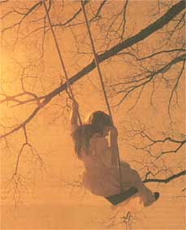
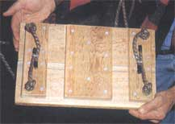
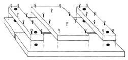
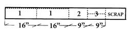
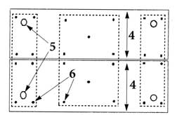
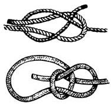

My childhood was graced with an older generation that knew how a kids' swing ought to be built. No flimsy metal frame sets with cramped plastic seats hung on thin, palm-cutting clothes line. No thigh-squeezing rubber slings on finger-pinching chain either. Instead, there were stout wood seats that little knees could lock on to, and boat-mooring line, suspended from sturdy tree branches, and that was fat enough to give a firm grasp. At the old family homestead, a swing at the river bank was fastened so high that the rope disappeared forever into the canopy of a huge black oak. Pumping hard, we could swing 15 feet above the water ... let go and fly almost to midstream ... and land in a cannonball worthy of the name.
I've built old-style swings on my own country places for over 20 years now. I can tell you that an awful lot of children (and adults) have shared the joy of swinging and creating a nice breeze during those sticky summer days. There's a real pride in knowing I helped to put those smiles there - a pride everyone should know. So I've decided to teach all of you the craft of building a sturdy swing that your children and grandchildren will remember you by.
There's several materials that go into building a tree swing. You'll need a hand saw or electric Skilsaw (try square or other right angle), wood rasp, sandpaper, screwdriver (an electric power driver is best), a drill with 1/8" and 3/8" wood-bits, lumber, rope, fasteners, fittings (as specified), plus a can of wood preservative and a brush. However, you'll need no great carpentry expertise, and I'll demonstrate some marlinspike seamanship so that you can fasten the rope securely.
First, there's the matter of picking the right tree. You should look for one that is in open ground, and that has a thick, live-wood limb which is growing parallel to (and not inaccessibly high off) the ground. A limb much less than ten inches in diameter will bounce, reducing the young swinger's stability. A solution might be to attach the swing close to the trunk, but too close and the swing will carom off it. Deadwood branches will break, and limbs that angle upwards will skew the arc of the swing.
The higher the limb, the longer the swing's pendulum motion and the higher it can go before gravity overpowers momentum. Playground swings are six to ten feet high, and a gradeschooler can get five to six feet above the pavement. Your yard will provide a softer landing for any slip, and your swing's ropes can be attached fifteen feet off the ground to give a good but not too-high ride. For a real cloud-duster, you can send a good tree climber up to fasten your ropes to a limb 25 feet or more high. Make a point of supervising those children under 12 years of age. Measure or estimate the height of the limb off of the ground. Then go to a quality lumber yard and a good hardware store and purchase the following weather-resistant materials:
Wood: Measure six feet of nominal 4/5" thick, 6' wide (actual measure: 1 1/16" thick and 5½" wide) #2-grade Eastern white, Western red cedar, or California redwood decking, preferably with "eased" or rounded edges. If these naturally rot-resistant, non-splintering woods are not available, buy white oak or an other hardwood if you can. Common two-inch-thick construction softwood lumber is okay. It's thick and splintery but definitely better than thin, easy splitting, 1" pine shelving. Don't think of using deck boards of that colored, pressure-treated wood - you don't want a splinter containing arsenic or copper preservative in your child's tender bottom.
Rope: You'll need twice the swing's height plus four yards of 3/8"-diameter twisted "poly" rope ($.15/ft.). Poly-twist comes in white, yellow, and a woodsy-looking brown. Though it gives the best grip of any, avoid natural-fiber manila rope, which will rot in time and break when least expected. Braided nylon rope is seductively soft and pliant, but is too slippery to afford a good hand-hold, and at a half-dollar and up, very expensive. Don't ever use a common clothes line.
Screws: For an electric power-driver, you'll need 26 #6, 1 7/8"-long galvanized deck screws ($.10 apiece); for hand-driving, use 26, #6, 1 7/8" brass screws ($.25 each).
Glue: Use a small amount of waterproof wood glue.
Twine: You'll need several feet of 1/16" thick 20 to 30 lb nylon twine.
Washers: Use four 3/8" brass or stainless steel washers ($.20 a piece).
Staples: You'll need four galvanized 1/2" fence staples.
Finish: Use a small amount of nontoxic, colorless deck preservative.
Eyescrews: You'll need two closed-ring-end galvanized giant wood screws, three or four inches long with a 1/4" shank ($.50).
"S" Hooks: Use two 1/4" galvanized steel rod joiners ($.50).
The seat is made from a pair of narrow boards (a single, wide board might split). It is ten inches deep and 16 inches wide to offer young children an ample seat, a good leg hold, and a snug, safe fit. If your kids are broad in the beam, or the swing is going to be used by older teens and adults, cut the seat boards 18 inches long.
Cut Wood (See Cutting Guide)
From the 1' x 6' decking lumber, saw off a scant 1/2" to square one edge and to give it a clean end. Then, cutting around knots, saw:
1. Two 16" long seat boards. Rip-saw 1/2" off the roughest long edge of each board.
2. One 9" long center cleat.
3. Two 9" long, 2½" wide end-cleats. Rip off the eased edges for a more finished look.
Fasten Cleats To Seat (See Layout and Fastening Diagram)
Place the seat boards on a flat scrap lumber surface with the cut edges facing one another. To provide a drainage slot, place the spacers of cardboard (from the back of a writing tablet) between them at the ends and the middle.
1. Spread glue on one side and then place the cleats. The center cleat should be in the middle and the end cleats should be inset a half-inch from the edges of the seat. Clamp or weight in place.
2. Pilot-drill 1/8" holes 1¾" deep through the cleats and the seat boards where screws will be located.
3. Turn screws into pilot holes so screwheads are just below the wood surface.
Drill Rope Holes
1. To locate the rope-attachment holes, draw a faint pencil line 1½" in from (and parallel to) the ends of the seat top. Make a pencil mark 1½" from the end of the lines. Make a dent at the pencil mark with a nail or punch to center the drill.
2. With a 5/8" wood-bit, drill four holes straight down and all the way through the seat board and end cleats from top-to-bottom.
3. Use a wood rasp to round sharp edges, and sandpaper to smooth rough surfaces - especially the front of the swing seat and the forward edges of the cleats. Sand-finish cleats, sides, and bottom as smooth as your craftsmanship dictates, but rough the top of the seat and/or cut shallow diagonal cross-hatches an inch apart in the seat with a handsaw or the edge of a file so a kid's rump can get a good purchase.
4. Coat the wood with several coats of wood preservative. Soak well if using any lumber except naturally self-preserving cedar or redwood.
The swing-ropes are attached to looped rope slings at each side of the seat. The slings give a snug hip-hold, and offer the swing greater stability; it can't tip forward or backward and dump a child who might be swinging too enthusiastically. And a small child can pull against the forward rope for better leverage.
Cut two 5-foot lengths of rope. Tape cut the ends or sear with a match until the ends melt so that the rope won't unravel (be careful not to breathe the smoke or let the hot, melted poly burn you).
Thread the rope ends down through holes in the seat, slip washers over each end. Now, leaving a good four inches of tail, tie simple but self-tightening overhand "granny" knots in all four ends. Adjust the knots until the slings are of equal length. With the fence staples, tack the tail of each rope to the end cleats.
Then, cut off and sear the ends of four two-foot lengths of the 1/16" nylon twine. Locate the center of each seat rope sling, and twist 180 degrees into a 1-inch loop. Untwist the sling ropes where they cross just enough to open the strands. Then thread twine through both, and twist them back tight. Pull one end of the twine short (about six inches). Tie the twine ends tight to hold the loop together.
Now, bind (in nautical jargon, "whip") the loop together where the ropes cross. Form the short end of the twine into a loop with a good tail. Binding in the tail of the twine loop as you go, wrap the long end as tight as you can a dozen times around the "X" where the rope crosses below the loop. Thread the end of the wrapping twine through the twine loop, then pull the end of the loop's bound-in tail until the loop disappears under the wrapping. Trim and sear the loose ends of twine. Nylon twine is limp, and keeping it tight it takes dexterity, but with a trial or two you will lay on your wrapping tight and evenly spaced, ending up with a seaman-like rope eye or "becket":
Fasten the swing ropes seventeen inches apart on your tree limb. (Spacing the ropes a bit wider than the seat gives lateral stability so the swing won't skew or twirl easily. If the kids are small, and you want to reduce and further stabilize the swing's travel, experiment with even wider spacings.) Where it circles the limb, you may want to run the rope through a length of old garden hose to protect a thin bark such as beech, or notch rough hickory or maple bark to keep the rope in place.
For easiest attachment, toss the rope over the branch, throw a "bowline" knot in one end (see the illustration: Knots) leaving a three inch tail. Then, for good measure, whip the tail to the adjoining swing rope. Pass the other end of the swing rope through the loop and cinch what is now a running bowline tight up on the limb.
An even better method is to attach the ropes to the eyescrews in the limb. Drill 1/8" pilot holes 17 inches apart on the under side of the limb; insert a screwdriver in the eyescrews and turn them into the holes. Then make whipped-tail bowlines in one end of the rope and hang it from the eyescrews with secure, but dismountable "S" hooks. This way you can unhook the swing and store it over winter. Keep those rubbing metal parts (which are up at the tree limb) greased and the swing should last for generations.
Attach Rope To Seat
Attach the free end of the swing ropes to the beckets that are in the seat rope slings with a becket bend (see illustration: Knots). Take your time to loosen and adjust the knots so that the seat is level and at the best height. Remember, you want your children to be able to reach the ground with the balls (but not the heels) of their feet. (Hint: For a 7-year-old, a seat top 13" off the ground is about right.) Push the whipcord holding the sling becket up under the loop in the becket bend, tighten, and whip the loose end of the knot to the swing-rope.
This simple-looking but self-cinching knot will hold forever, even in slippery artificial-fiber rope. But when the kids grow a few inches, you can cut the binding, loosen the knot with a push, raise the swing and rebind. Check the knots until the rope sets over a few month's use. If your knots or bindings persist in coming loose, avoid shipping out on a sailing vessel any time soon and spray with an all-purpose, water-resistant adhesive. The wood will weather to a dusty gray in time and, with annual applications of wood preservative, should last until your grandchildren have grandchildren of their own.
Finally, a comment on swing safety: Centrifugal force will hold kids on the seat as long as they don't go so high that the rope slackens at the top of the swing. Accidents are limited to occasional scratched knees and stubbed toes at the landing zone under the swing if kids are given a non-slippery seat, rope they can grasp, plus training and supervision. Teach them to hang on tight with both hands and to swing straight and not too high. And, prohibit tricks, while swinging high (no twisting the rope, hanging ape-like by one arm, no standing on the seat or letting go to to sail off onto the ground). Scrapes are minimized if kids are dressed in tough jeans and shoes. (Little girl's dresses are not safe swing-apparel. Silky underdrawers can slip off dress fabric, and send kids sprawling to the ground. Bare knees are vulnerable.) It's easiest on shoe leather if kids are encouraged to "let the dog die" rather than scruffing themselves to a stop. And, never let grown-ups or older youngsters push younger children higher than they like to go.
|
 The Freedom of Flight: There's a real pride in knowing I helped to put smiles on children's faces - a pride everyone should know. |
 Seat Layout |
 Cutting Guide 1. Seat Halves 2. Center Cleat 3. End Cleats |
|
 4. Seat Boards 5. Rope Holes 6. Screws. Broken line = cleats. |
 Securing the Swing: Two of the best knots are: TOP: The Becket Bend and BOTTOM: The Bowline. The Bowline is best used for knots around the limb, the Becket for the knotholes in the swing. |
 |